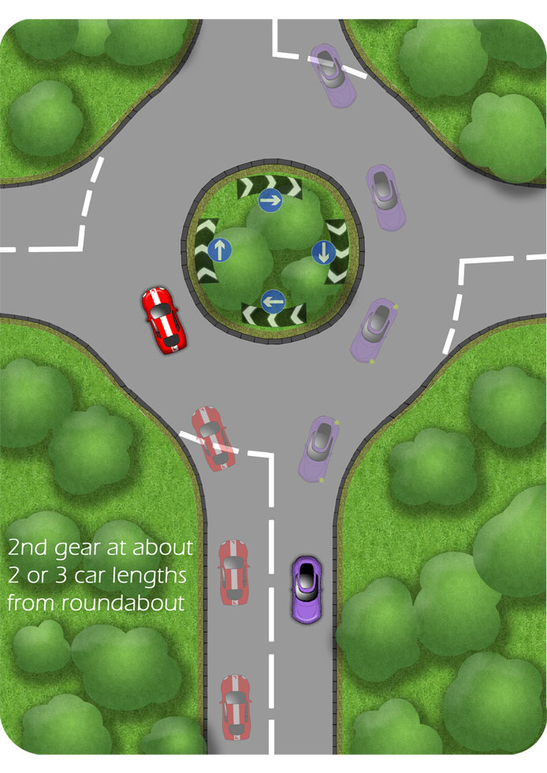
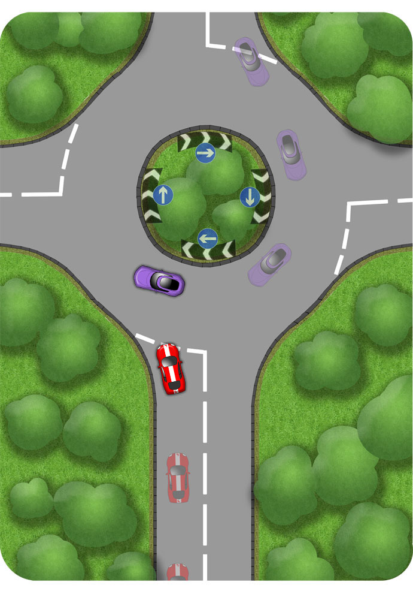
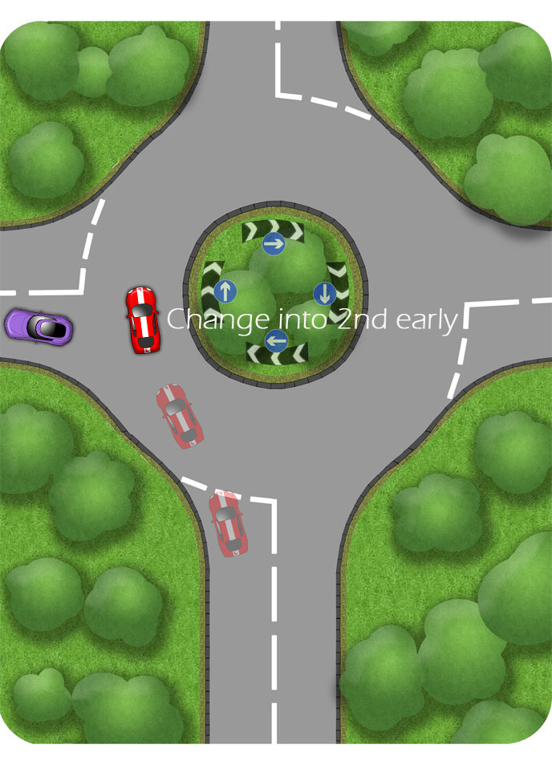

Priority
You should give way to traffic from the right at most roundabouts.
As you approach, look to the right and all around to anticipate your opportunity and to the left to see where you need to steer.
Proceed without stopping if the way is clear.
Where there are traffic lights, priority is determined by them
Controls
How you approach a roundabout depends on it’s shape and size and on the speed and proximity of other traffic.
However, it is often appropriate to slow the car down, as part of the MSM routine, and choose second at about two car lengths from the line. Whether you engage the gear, or not, depends on whether it is clear from the right, as illustrated below:
Approach in second to proceed smoothly..

Changing into second gear at two car lengths from the roundabout is often most efficient. This enables you to proceed smoothly if you find the way to be clear as you approach the line.
To view the typical controls for the illustration above, click Here
..or stop and change to first

Approaching the roundabout in second gear and looking up to the right, you may find that it’s not safe to proceed. In this case you can simply pull up to the line, changing again into first gear.
In this illustration, the purple car is not signalling correctly. Beware of this!
To view the typical controls for the illustration above, click Here
Setting Off

When it’s safe to set off, build the speed quickly in first gear so that you’re able to change early. Once in second, your hands are free to steer and signal as required.